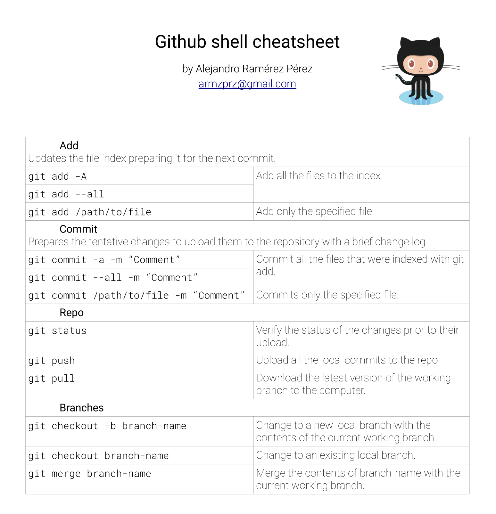

Github cheatsheet
¿Quieres descargarlo como PDF?
¿Sigues buscando ayuda?
Checa la documentación de Github.
¿Quieres descargarlo como PDF?
¿Sigues buscando ayuda?
Checa la documentación de Github.

git add -A-> añade al commit actual todos los archivos que se modificaron desde el último commit.
git add /path/to/file -> añade SÓLO el archivo que indicas.
git commit -a -m "Comentario breve de los cambios" -> la opción -a indica que se le aplica el commit a todos los archivos en el add.
Se puede usar /path/to/file para indicar sólo un archivo.
La bandera -m indica que se mueve a un commit nuevo (En caso de que hubiera uno antes y no se hubiera hecho push). Por último, el comentario es una breve descripción de los cambios hechos en ese commit.
git push sube todos los commits almacenados localmente al repo.
¿Sigues buscando más? Checa esta guía, por Nina Jaeschke.
Proporcionada por Felipe E.